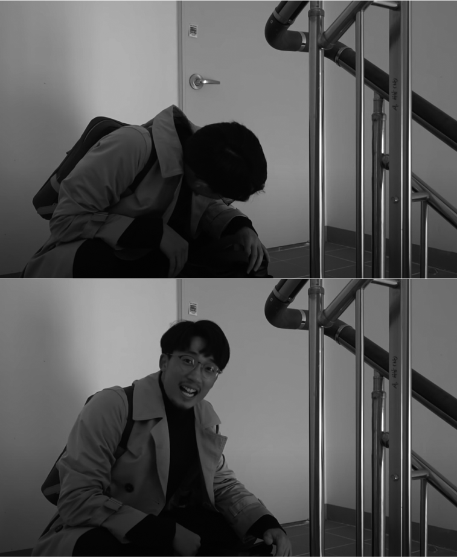

계단을 오르면 정말 수명이 늘어날까?
어느 날, 늘 가던 도서관 계단을 올라갈 때 다음과 같은 문구가 눈에 들어왔다.
‘계단 한 칸을 오를 때마다 수명이 4초 늘어납니다’
자주 보던 글인데, 그날따라 저 말이 맞는지 아닌지 시험해보고 싶었다. 정말 계단 한 칸에 수명이 4초씩 늘어날까? 당연히 계단 오르기가 초 단위의 수명에 영향을 미치는지 증명해낼 재주가 나에게는 없었다. 다만 뉴스에서도 계단 오르기가 건강에 좋다고 하니, 구체적으로 뭐가 어떻게 좋아지는지 체험으로 알아내고 싶었다. 그래서 건강도 챙길 겸 한 달 동안 계단으로만 다녀보기로 했다. 내가 19층에 산다는 것은 새까맣게 잊은 채…….
계단 오르기를 할 때는 주의할 점이 한 가지 있었다. 내려갈 때는 올라갈 때에 비해 관절에 크게 무리가 갈 수 있어 엘리베이터를 이용하는 게 좋다고 한다. 그래서 어떤 건물이든 올라갈 때는 계단, 내려갈 때는 엘리베이터라는 규칙을 정하고 도전을 시작했다.
✔ 목표: 한 달 동안 건물을 올라갈 때 엘리베이터 금지, 계단만 이용한다.

19층도, 42층도 오직 두 다리로!
본격적인 시작에 앞서 잠깐 퀴즈. 1층에서 19층까지 걸어 올라가는 데 몇 분 정도가 걸릴까? 10분? 20분? 정답은 6분이다. 노래 두 곡이 채 되지 않는 짧은 시간이다. 물론 쉬지 않고 올라갔을 때의 이야기지만, 걱정했던 것보다 긴 시간은 아니다. 그래서 내 도전이 쉬웠냐 하면 절대 아니다.
호기롭게 시작했지만 첫날부터 막막했다. 지금의 집에 살면서 19층까지 단 한 번도 계단으로 걸어 올라간 적이 없었다. 다섯 대나 있는 엘리베이터를 지나 계단실 문을 열었다. 고개를 들어 위쪽을 한 번 쳐다봤다. 끝이 보이지 않았다. 지독한 싸움이 될 것 같은 예감이 들었다. 그래도 마음을 굳게 먹고 한 손에 핸드폰을 꽉 쥔 채 녹화 버튼을 눌렀다. 생각해보니 예전에 살던 원룸은 엘리베이터가 없는 4층에 있었다. 그걸 딱 다섯 번 한다고 생각하자. 그렇게 결심하고 첫발을 내디뎠다.
2층, 3층을 지나 4층에 다다랐다. 4층 정도야 평상시에도 종종 올라갔기 때문에 크게 힘들진 않았다. 문제는 6층부터였다. 슬슬 허벅지에 자극이 오기 시작했다. 한 층, 한 층을 올라가는 속도가 급격하게 느려졌다. 열심히 오르고 또 오르다 보니 10층이다. 드디어 절반까지 도착했다. ‘벌써 반이나 왔네’라고 생각하기에는 다리가 멋대로 후들거린 지 오래였다. 지금까지 오른 걸 한 번 더 해야 한다니……. 엘리베이터를 탔으면 집에 도착하고 남았을 시간인데. 이후부터는 아무 생각도 들지 않았다. 입으로 내뿜는 거친 숨소리만 들렸고, 층수도 아주 천천히 올라갔다.
16층…… 17층…… 거의 다 왔다……. 18층……!
그리고 마침내 19층……!
황급히 계단실 문을 열고 밖으로 나와 집까지 마지막 힘을 쥐어짜 도착한 다음 도어락을 눌렀다. 신발을 벗음과 동시에 쓰러지듯 침대에 드러누웠다. 등이 땀으로 흠뻑 젖었지만, 다시 일어날 기운도 없었다.
‘도전 환불할까…….’
포기하고 싶은 생각도 잠시 들었지만, 이왕 시작한 도전을 되돌리고 싶지는 않았다. 내심 이 정도면 콘텐츠로도 나쁘지 않고, 한 번 해보고 나니 할 만하겠다 싶기도 했다.
그런데 이게 웬걸, 위기는 한 시간 만에 찾아왔다. 저녁을 해 먹어야 하는데 냉장고에 먹을 만한 게 없었다.
‘아, 그럼 장 보고 또 걸어 올라와야 하네? 그것도 장 본 거 들고?’
굶을 수는 없었기에 결국 마트에 갔다. 1층으로 내려가는 엘리베이터가 벌써부터 소중했다. 달걀 한 판과 채소를 양손에 들고 어김없이 계단실로 들어왔다. 아까 한 번 올라봐서 그런지 두려움은 덜했다. 그렇다고 절대 덜 힘들지는 않았다. 헉헉거리면서 겨우 19층까지 올라와 식재료를 정리할 정신도 없이 다시 침대에 드러누웠다. 혹시…… 도르마무……?
뭉친 허벅지를 달래고 후덜덜 떨리는 다리를 이끌고 겨우 저녁밥을 해 먹었다.

포기하고 싶은 생각도 잠시 들었지만,
이왕 시작한 도전을 되돌리고 싶지는 않았다.
‘아, 이제 좀 쉬다가 운동하러 가야겠다. ……음?!’
잠시만, 그렇다는 말은 10층에 있는 헬스장까지 걸어 올라가고, 운동이 끝난 다음에 다시 19층까지 계단으로 올라와야 한다는 것?
혹시나 해서 말하자면 오늘은 도전 첫날이다. 왜 난 아까 나간 김에 운동할 생각을 못 했고 내가 다니는 헬스장은 10층인 걸까. 어이가 없어서 헛웃음이 나왔지만 내일부터는 계획적으로 스케줄을 짜겠다 다짐하고 헬스장으로 향했다.
10층은 19층에 비하면 수월했다. 계단으로 올라오니 따로 워밍업도 필요 없었다. 운동을 마치고 집으로 돌아와 이를 악물고 다시 엉금엉금 19층까지 기어 올라갔다.
‘드디어 집이다. 오늘은 더 이상 계단을 오르지 않아도 된다.’
최근 며칠 중 가장 노곤하고 마음이 편해지는 밤이었다. 아니나 다를까, 도전 첫날 후기 영상을 보니 눈에 피로가 가득했다. 오늘 하루만 거의 70층을 걸어 올라갔으니 그럴 만했다. 그래도 계획만 잘 짜면 꽤 수월할 것 같았다. 첫발을 잘 내디뎠다는 작은 자신감도 붙었다.
다음 날부터는 소위 ‘천국의 계단’이라고 불리는 스텝밀 머신을 6분 동안 타면서 틈새 유산소 운동을 한다고 생각하기로 했다. 첫날부터 갖은 고생을 해서 그런지 둘째 날부터는 훨씬 편해졌다. 힘이 될 만한 신나는 노래를 듣거나 유튜브 영상을 하나 틀어두면 순식간에 19층에 도착해 있었다. 또 내가 좋아하는 야구 중계도 든든한 지원군이 되어주었다.
이 정도면 가뿐하게 한 달 챌린지를 해낼 수 있겠다고 생각했지만 5일 만에 뜻하지 않은 위기가 찾아왔다. 오랜만에 부모님을 뵈러 본가에 내려갔는데, 내려갔는데…….
우리 집은 42층이었다(아버지, 왜 이렇게 집을 높은 곳에……).
과연 내가 한 번에 올라갈 수 있을까? 나는 왜 계단 오르기 챌린지를 시작했을까? 온갖 생각이 다 들었지만, 일단 짐이 너무 많아 1층으로 아버지를 호출했다.
“아빠, 저 한 달 동안 계단으로만 다니기 도전하고 있는데 짐이 많아서 이것만 좀 올려주세요.”
“오, 그래? 아빠도 요새 계단으로 다니는데.”
“네? 42층까지요?”
“응, 지하 2층부터 42층까지.”
그렇다. 아버지는 고교 시절 역도부, 대학 시절 보디빌더, 그리고 귀신 잡는 해병대 출신이었다. 아무래도 내가 가진 도전 DNA는 아버지로부터 온 것이 분명하다.
이제 마음을 단단히 먹고 42층까지 걸어 올라가기 시작했다. 땀을 뻘뻘 흘리며 25층까지 올랐을 때 갑자기 계단실 문이 열렸다. 아버지였다. 여기에서부터는 함께 집까지 올라갔다. 계단으로 다니는 게 힘들지 않으시냐고 여쭤보니 천천히 오르면 20분, 빨리 오르면 12분쯤 걸린다며 대수롭지 않다는 듯 대답하신다(역시 그 아버지에 그 아들).
신기하게도 42층까지는 딱 12분이 걸렸다. 태어나서 처음으로 42층까지 걸어 올라와 보니 엘리베이터가 고장 났을 때를 대비해 이렇게 미리미리 계단 오르기에 익숙해지는 것도 나쁘지는 않겠다는 생각이 들었다.
이후부터는 도전이 한결 수월했다. 한 달 중 3일은 회사에서 연 전시회에 참가해 하루 종일 서 있어야 하다 보니 무리하지 않기 위해 10층까지만 계단으로 오르고 그 위로는 엘리베이터를 탔다. 지친 다리를 이끌고 10층까지 겨우 올라 엘리베이터에 타자 19층까지 올라가는 데 고작 10초가 걸렸다. 엘리베이터를 만든 사람은 노벨 평화상을 받아야 하지 않을까? 엘리베이터가 이렇게나 좋은 문명의 이기였다니, 새삼 달라 보였다.

일상 속 아주 작은 습관의 힘
계단 오르기로 한 달 동안 내 수명이 얼마나 길어졌는지는 모르겠다. 계단 하나에 4초씩이라면 하루쯤은 늘어났으려나? 적어도 운동 효과가 어마어마해서 체력은 눈에 띄게 좋아졌다. 만지기만 해도 허벅지와 엉덩이가 탄탄하게 느껴질 정도로 유산소 운동 효과도 확실했다. 특히 헬스장에서 웨이트와 유산소 운동을 마치고 칼로리 버닝이 끝났다고 생각할 때쯤 다시 한번 계단 오르기로 마무리 운동을 해주니 저절로 살이 빠졌다. 계단 오르기 중에 시작한 ‘복근 만들기’ 도전 때문에 식단도 조절했지만, 습관적으로 계단을 오른 덕분에 어렵지 않게 8킬로그램을 감량했다.
러닝 용어 중에 ‘러너스 하이(runners’ high)’라는 말이 있다. 30분 이상 달리기를 계속하다 보면 죽을 것 같다는 느낌을 넘어서 갑자기 행복감이 밀려드는데, 이때는 피곤이 사라지며 계속해서 뛸 수 있을 것 같은 기분이 든다고 한다. 사람이 극한 상황에 놓이면 뇌는 생존을 위해 우리를 속이게 된다. 그러나 때로는 알면서도 그 속임수에 넘어가 행복한 기분을 느끼고 싶을 때가 있지 않은가. 나 역시 계단을 오르며 10분이 채 되지 않는 짧은 시간에 잠깐이나마 이런 기분을 경험했다. 19층을 다 올라갔을 때 말이다. 밖에서 따로 운동하는 시간을 내기 어려운 사람이라면 계단 오르기라는 단순한 습관만으로 이런 뿌듯함과 행복을 느껴보면 어떨까 싶다. 나는 이런 변화를 ‘워커스 하이(walkers’ high)’라고 부르기로 했다.
내가 사는 오피스텔의 계단실은 창문이 뚫려 있어 숨이 차고 힘들어도 쾌적하고 답답하지 않았다는 장점이 있다(다른 오피스텔이나 아파트 계단실은 좁고 창이 없어 답답한 경우도 많다). 집까지 걸어 올라가는 게 부담스럽거나 높은 건물에 살지 않아 집에서는 계단을 사용하기 어렵다면 지하철이나 학교, 회사에서 계단을 이용해보면 어떨까? 어떠한 도구도 필요 없이 하루 10분 미만으로 최고의 만족을 얻는 ‘아주 작은 습관의 힘’을 경험할 수 있을 것이다.